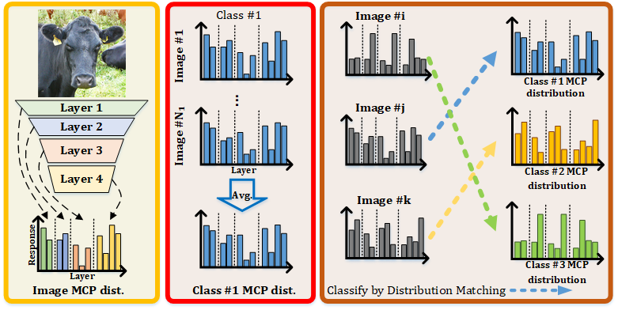
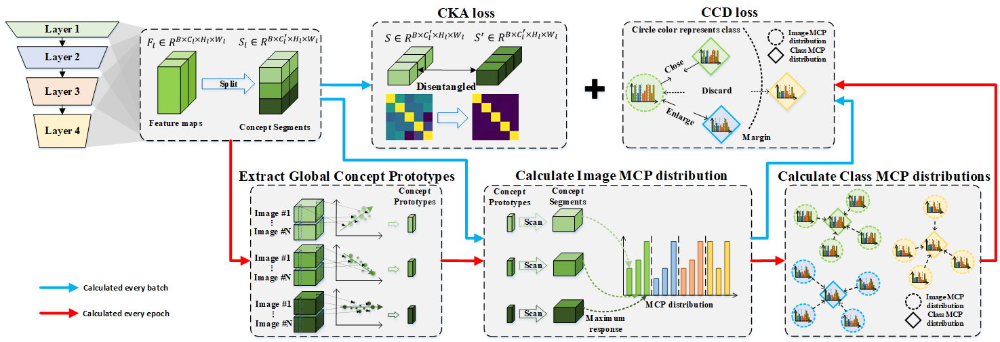
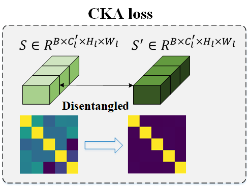
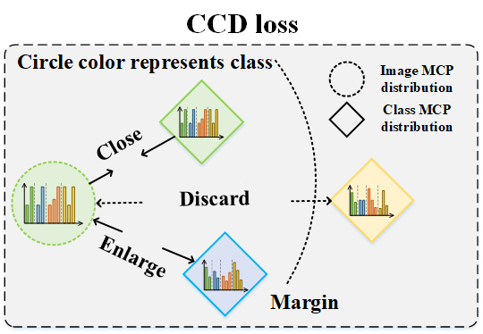
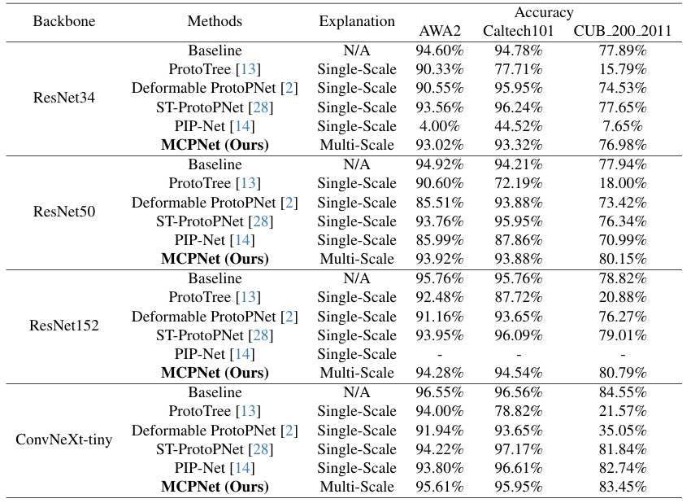
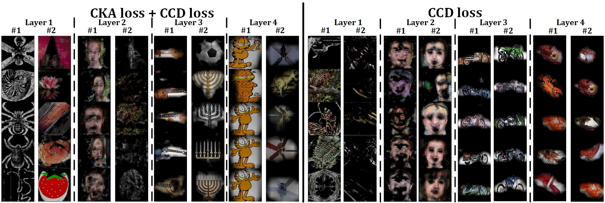

Methods
New Classify Paradigm
MCPNet introduces a new training paradigm for classification tasks and provides hierarchical concept explanations for the classification results. First, calculating concept responses in different layers generates the Multi-level Concept Prototype Distribution (MCP distribution). Each layer will learn the distinct, independent concept by reducing the similarity between different concept segments measured by the Centered Kernel Alignment (CKA). Next, the representative MCP distribution for each class (class MCP distribution) is calculated by averaging all the MCP distributions of images in the same class in the training set. Finally, the classification is made by distribution matching between the image MCP distribution and the class MCP distributions. The image will belong to the class with the closest distance calculated by JS divergence.

Training Workflow
The training process for MCPNet involves using both Class-aware Concept Distribution (CCD) loss and Centered Kernal Alignment (CKA) loss as the objective functions. For the CKA loss, we segment the feature maps into various parts during each batch to assess their similarity using CKA, ensuring semantic independence. For CCD loss, we build the image MCP distribution for every image in each batch. On the other hand, to decrease the duration of training, we update the concept prototypes and the class MCP distribution, which are assembled by scanning the entire dataset, only once per epoch.

Center Kernel Alignment (CKA) Loss
The CKA loss is derived from the CKA measurement, a reliable metric for assessing the similarity between features. By minimizing the CKA similarity across various segments, we promote the disentanglement and independence of semantics within each segment, thereby creating a clearer and more representative foundation for interpretation.

Class-aware Concept Distribution (CCD) Loss
From cognitive perspective, the samples belonging to the same class ideally should have similar combination of concepts. This comes up with the idea of proposing the CCD loss, which encourages the samples of the same class to have identical concept prototype distribution while enlarging the distribution distance across the different categories.

Experiments
Main Quantitative Results
We compare the performance of MCPNet with various methods on different datasets to show our MCPNet can provide multi-scale explanations without compromising the performance.

Ablation Study
We show the effect of our proposed constraints, Centered Kernel Alignment (CKA) loss and Class-aware Concept Distribution (CCD) loss.
The purpose of the CKA loss is to disentangle the semantics between different segments to make each prototype learn a distinctive meaning, which causes poor performance due to not distinguishing the feature between different classes. On the other hand, the CCD loss is used to discern the images' MCP distribution to the corresponding class, which results in high accuracy.

However, without the CKA loss, there is an observed increase in similiarty among concept segments, leading to duplicated concept prototypes.

Explantion Samples
MCPNet employs multi-scale concept explanations as the foundation for accurate classification. In particular, for the second scenario, the high responses to both Grizzly Bear and buffalo classes in terms of high-level concept would lead to confusion if the classification is based solely on the high-level responses, while such confusion can be resolved with the incorporation of low-level concept responses. Moreover, in the third scenario, even without a direct concept match in the image -- such as the concept from layer 4, potentially interpreted as sheep -- MCPNet accurately interprets the image using the constructed MCP distribution based on the holistic consideration over the distribution of concept responses across multiple scales.